June 2015
| I can't seem to stop taking pictures up here,
so check them out if you have some time to kill. |
|
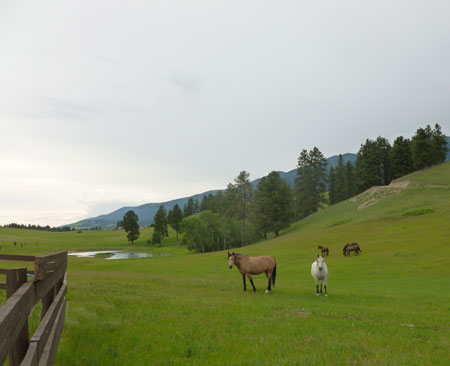 Lovely view of the field and pond behind Dan & Tracie's
house. This will be the |
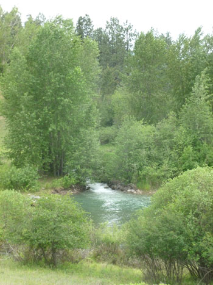 |
| This tiny stretch of rapids is called "the inlet." It creates a
beautiful sound from the end of the lake which we can hear at our place. Truly lovely. |
|
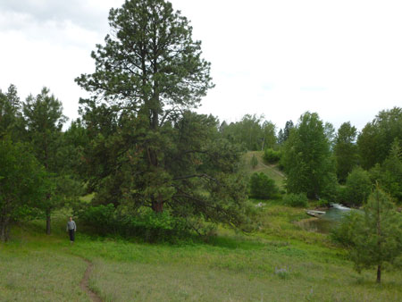 |
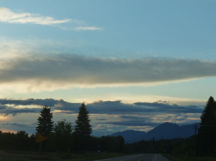 |
| An absolutely huge Ponderosa Pine with Eric for scale. A moose
chased him up in this tree many, many years ago.
|
Sunset on one of our drives from Kalispell. You have to be up pretty
late to see the sunset up here - it goes down around 10pm! |
|
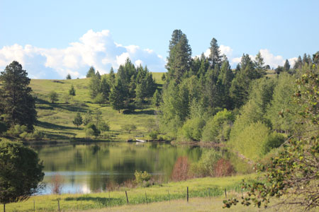 My view from my home office - what a huge blessing!
|
|
| Shawnna spies on wildlife
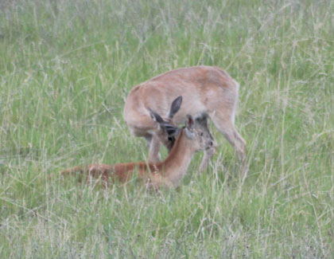 |
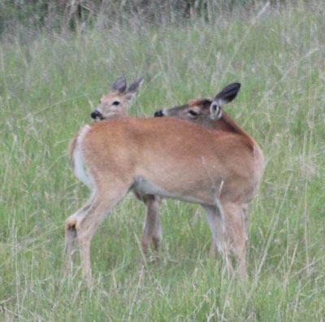 |
| Two deer were sleeping in the yard, then the younger one gets up and makes the older one get up too. |
The the older one gives the young 'un a back licking. And what have we learned here? Naps will forever be cut short after this! |
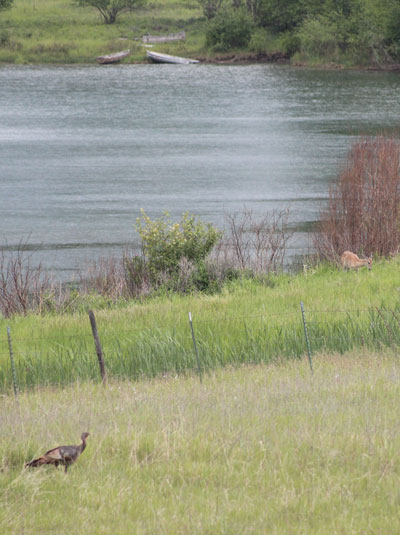 |
|
| I liked that I could get a turkey and a deer in the same shot - photograph, that is! | |
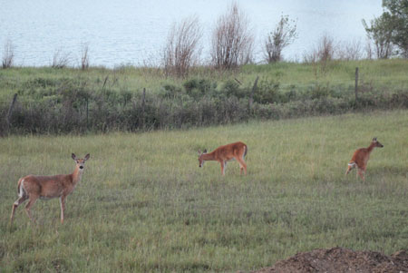 |
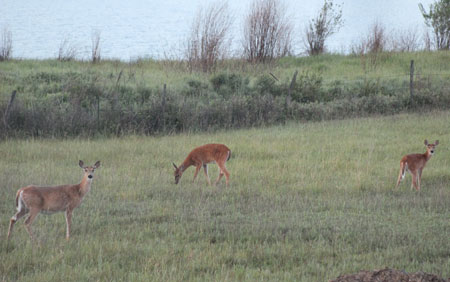 |
| I caught the deer on the right taking a poop... | Then he caught me taking a picture of it. He's thinking, "Some privacy please!" |
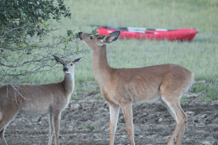 These two were at the tree just outside my window one morning before work. The red kayaks in the back are on loan from Mark & Jodi - very nice for an evening paddle! |
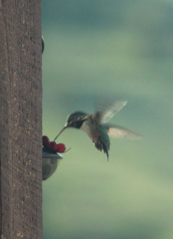 |
| I put up a hummingbird feeder and gained a new hobby - hummingbird photography. This is blurry but I'll get better. |
|
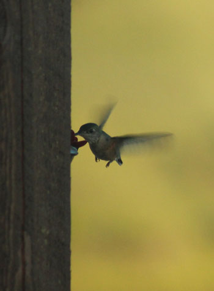 |
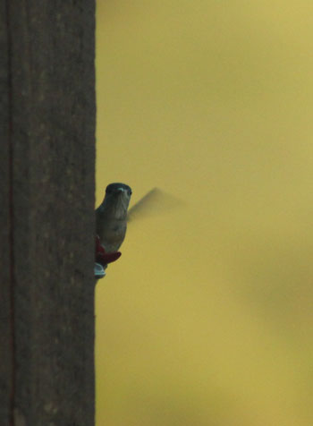 |
| Getting a drink... | and catching me spying on him! |
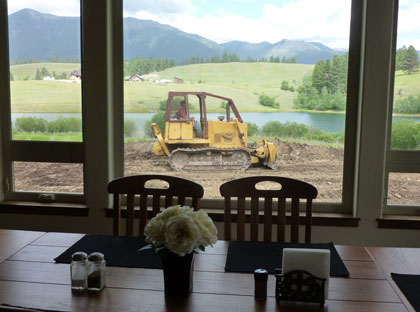 |
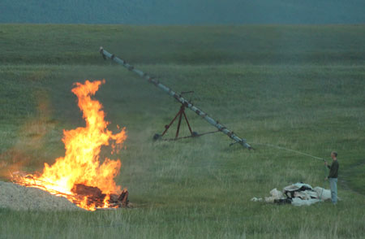 |
| My nephew Brodie is passionate about heavy equipment. He would
LOVE the fact that we've had a dozer, excavator, and dump truck going all day this week. |
Here Eric does a "controlled" burn - that little water hose looks
like it has things under control, doesn't it? This fire started with cool explosion from the gasoline used to fuel the flames. It shook the windows of the house - cats were running everywhere! |